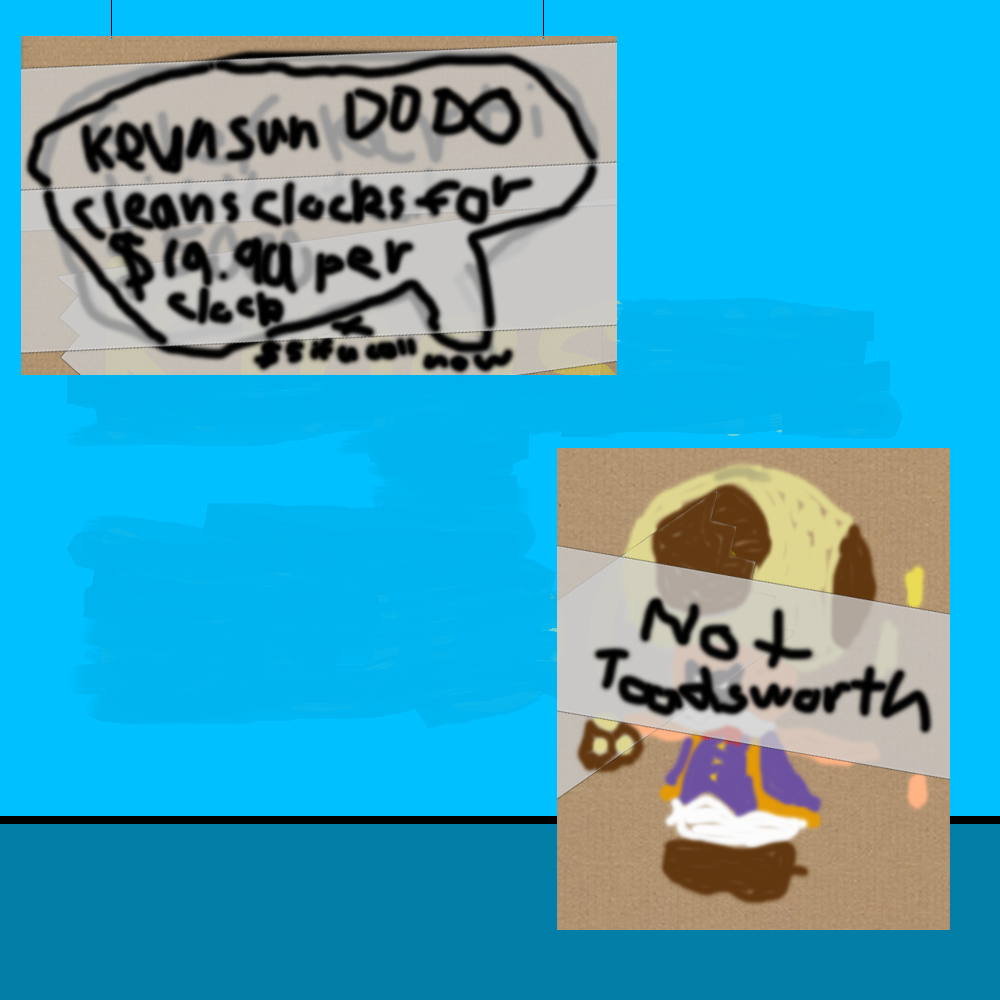
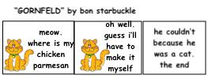

Episode 7: October 12th, 2018
Back to index
Shef Kerbi News Bulletin #7
PROVIDING ONLY THE BEST NEWS
12 October 2018
BROKEN NEW:
The Dreem Lend Space Program has just launched their first Worp Star into space. They have spent several years developing this
Worp Star and it will eventually allow for anyone in Dreem Lend to be able to fly into space without being a star warrior of their own. We recently
interviewed the head of the DLSP and this what he had to say:
"ok this is so epic i am excite"
The Worp Star launched just a few minutes ago and is now entering space. Make sure to watch it live as it enters space and prepares for the next
part of its journey. More footage will come back soon.
AD:

MOARR NEWS;
The confusion over the mysterious disappearance of Lolololololololololololo seems to have been figured out: he's appeared over in
Smash Bros Melee, because apparently Marth decided to grab.
CAMIC:

WATAHR:
Today: For some reason it's going to be a high of 17° and a low of 17°. Don't ask me how that works.
Tomorrow: Tomorrow's cloudy weather, a high of 16° and a low of 18° wait what
This news has all been 100% quality approved to federal government standards by Shef Kerbi
this website is best viewed with Ned's Escape